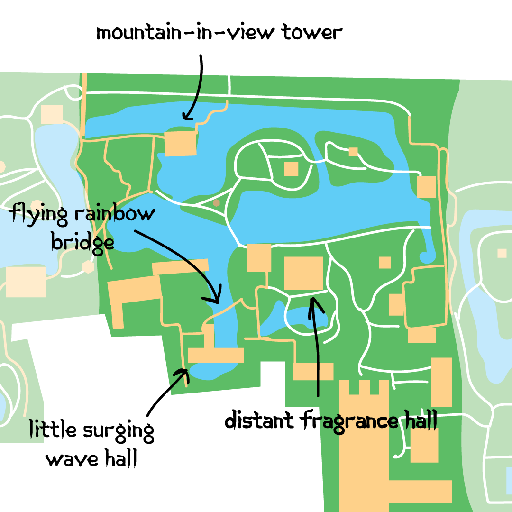
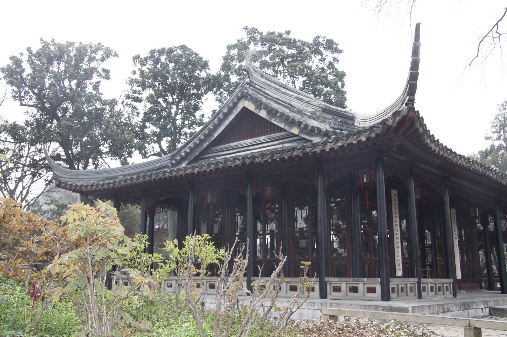
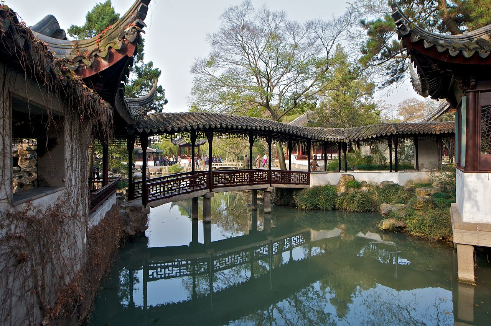
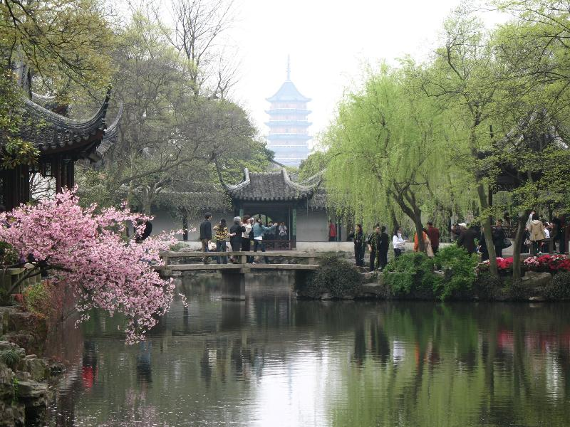
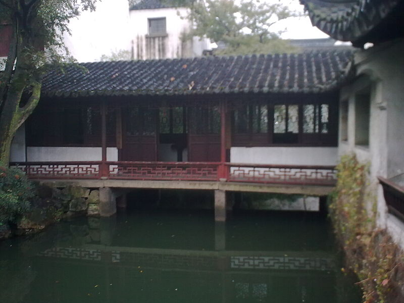

The Central Garden 风

Like the western garden, this section is also dominated by water. This pond however is filled with lotus plants, and is the oldest section of the three. Key to this section is the Hall of Distant Fragrance, used to observe the garden with both the eyes and nose. Another standout feature are the variety of bridges that link the pool’s islands together. There is the Flying Rainbow Bridge, named for its distinctive shimmering reflection. There are also a handful of zig zagging walkways, which allow one to take in the surroundings rather than focus on the destination.
Distant Fragrance Hall

This is the main hall of the entire garden. It is open on all four sides, emphasizing the ability to approach it from any direction. The peristyle around it adds to this impression, similar to the structure of a greek temple. This also adds to the open air feeling of the hall, allowing fragrances from around the garden to enter just as the people do.
The inside of the building is meant to be used as a greeting hall for guests, appropriate for its position in the center of the garden. From the center visitors can be seated in a circle, giving everyone a unique view of the outside through large windows.
Flying Rainbow Bridge

This covered bridge was designed to create a shimmering rainbow-like reflection in the water below. This adds to the serine otherworldly quality of the garden.
Its three section design is unique to the garden, being the only bridge of its type. It is also the only covered bridge, and is straight unlike the other jagged walkways. Why does this bridge stand out from the others? This may be due to the fact that this area of the garden is older and more conventional. This central section was built first, from 1509 to 1525 ce.

Another factor is that this bridge is not just a pathway, but a landmark in and of itself. Not only is the reflection distinct, but there is also a specialized separate pavilion just for viewing this bridge: the little surging wave pavilion. This tiny pavilion is aligned directly with the bridge, and uses it to frame the landscape behind it. This principle is called ‘borrowed scenery’, where background landscape is incorporated into the composition of the garden. This explains why the bridge had to be covered and straight; this shape allows it to act as a ‘frame’ for the scenery behind it.
Mountain-in-View Tower

This building is one of those framed by the Flying Rainbow Bridge described above, but its design goes beyond background scenery. It itself acts as a viewing platform for the area around. The bottom floor contains a moon gate. These were traditionally placed at the entry of chinese gardens, and there is no shortage of them here. You can read about the philosophy of the moon gates used in this garden here. This building makes use of the principle of ‘borrowed scenery’ by directly facing a faraway pagoda. This tower’s moongate aligns with one on the eastern edge of the garden as well as this pagoda, implying a direct path from one to the other even though they are miles apart.
This building also features on the central garden’s many zigzag bridges. These walkways follow a strange jagged path that is shared by many pathways within the garden. This sweeps the user’s view back and forth, and slows their pace so that they can take in the surroundings. All of this ties into the meditative experience of this site.
Little Surging Wave Hall

This small hall creates an interesting optical illusion. The Hall itself covers up the southern edge of the pond, and implies an unseen source of the water. This gives the impression of some areas of the garden that aren’t accessible from here, or that the garden is larger than it actually is.